Der Autobuchen-Assistent wird im Programmpunkt
1 Buchen
1 Autobuchung
1 Assistent
aufgerufen. Mit Hilfe des Assistenten kann definiert werden, zu welchen Zeiten bestimmte Buchungsstapel (im Menüpunkt Buchen/Buchen/Dialog-Stapel erstellt) automatisch abgerufen werden sollten.
Dies ist auch im Programmpunkt Aktionsplan möglich, der Assistent soll jedoch eine Hilfestellung sein, da er Sie schrittweise durch die Erstellung eines Termins leitet.
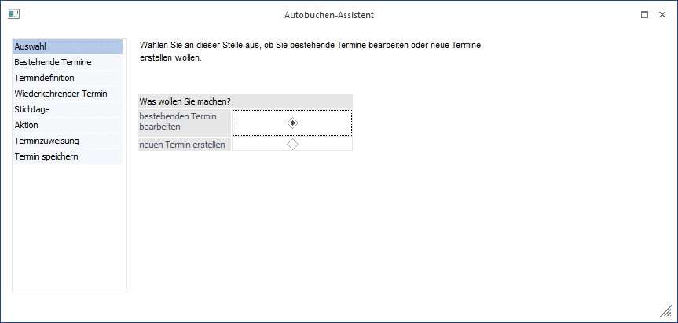
Bedienung des Assistenten
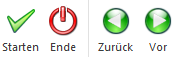
Ø Starten
Nach Bestätigung des Buttons kommen Sie automatisch zum letzten Schritt des Assistenten, wobei es keine Rolle spielt bei welchem Schritt Sie mit O.K. bestätigen. Von den Schritten, die dabei übergangen wurden, werden jeweils die Standard-Einstellungen genommen.
Ø Ende
Mit dem Ende - Button verlassen Sie den Programmpunkt.
Ø Zurück und vor
Mit den Buttons Vor und Zurück können Sie sich im Assistenten jeweils einen Schritt nach Vorne oder einen Schritt zurück bewegen. Abhängig davon, welche Option in den jeweiligen Schritten eingestellt wurde, können dabei Schritte übersprungen werden.
Ø Datumsfelder
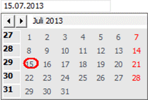
Durch einen Doppelklick im Bearbeitungsfeld Datum öffnet sich ein Kalender, über den Sie auch direkt ein Datum auswählen können. Mit den -Buttons ist ein vor- und zurückblättern zwischen den Monaten möglich.
Schritt 1 - Auswahl
Zunächst muss entschieden werden, ob ein bestehender Termin bearbeitet oder ein neuer Termin erstellt werden soll.
Wurde die Einstellung "bestehenden Termin bearbeiten" getroffen, so kommen Sie nach Bestätigung des Buttons "Vor" zum Schritt 2 des Assistenten.
Wurde die Einstellung "neuen Termin erstellen" getroffen, so kommen Sie nach Bestätigung des Buttons "Vor" zum Schritt 3 des Assistenten.
Schritt 2 - Bestehende Termine
Im Schritt 2 des Assistenten werden alle bereits gespeicherten Termine aufgelistet.
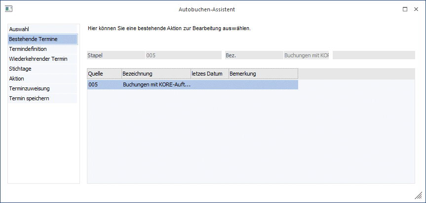
Markieren Sie die Zeile, die Sie bearbeiten möchten und drücken Sie den Button Vor um zu Schritt 3 des Assistenten zu gelangen.
Bei der Erstellung eines neuen Termins entfällt dieser Schritt.
Schritt 3 - Termindefinition
Im Schritt 3 des Assistenten erfolgt die Definition der Termine. Zunächst wird entschieden, ob es sich um einen einmaligen oder einen wiederkehrenden Termin handelt.
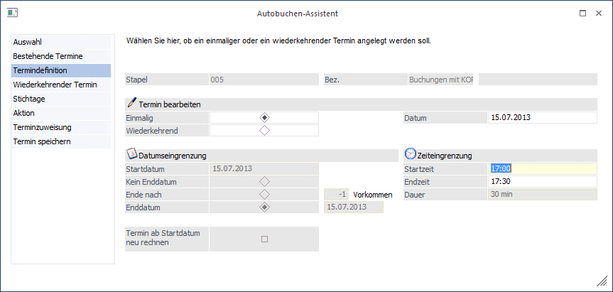
Je nachdem, welche Auswahl getroffen wurde (einmalig - wiederkehrend), erfolgt die weitere Bearbeitung des Termins.
Ø Einmalig
Bei der Auswahl eines einmaligen Termins kann im Feld Datum der Zeitpunkt der Aktion eingegeben werden.
Die Felder Start- und Endzeit werden nur in der Fakturierung bei einem Termin für den Telefonverkauf verwendet.
Wurde im ersten Schritt ein bestehender Termin ausgewählt, so gelangen Sie nach Drücken des Buttons "Vor" zum letzten Schritt des Assistenten, in dem die Aktion gespeichert werden kann.
Bei einem neuen Termin gelangen Sie nach Drücken des Buttons "Vor" zum Schritt 6 des Assistenten, in dem die Quelle für die Autobuchungen eingetragen werden kann.
Ø Wiederkehrend
Bei der Auswahl eines wiederkehrenden Termins können Start- und Enddatum eingegeben werden.
Ø Start
Eingabe des Datums, ab dem die Aktion durchgeführt werden soll.
Ø Kein Enddatum
Diese Option bewirkt, dass die Aktion nie automatisch endet. Zur Beendigung ist es notwendig, dass die Zeile aus dem Aktionsplan gelöscht wird.
Ø Ende nach ... Vorkommen
Eingabe der Anzahl, wie oft die Aktion durchgeführt werden soll.
Ø Enddatum
Eingabe des Datums, nach dem die Aktion nicht mehr durchgeführt werden soll
Ø Termin ab Startdatum neu rechnen
Diese Option bewirkt, dass bei einer Änderung der Termindefinition, die Aktion ab dem Startdatum, auch rückwirkend, neu gerechnet wird.
Ø Vorschau - Button
Nach Drücken des Buttons Vorschau erhalten Sie bei wiederkehrenden Terminen eine Übersicht, an welchen Tagen die Autobuchungen lt. Termin durchgeführt werden.
Nach Drücken des Buttons "Vor" gelangen Sie bei einem wiederkehrenden Termin zu Schritt 4 des Assistenten.
Schritt 4 - Wiederkehrende Termine
Im Schritt 4 des Assistenten kann der Rhythmus einer Aktion festgelegt werden.
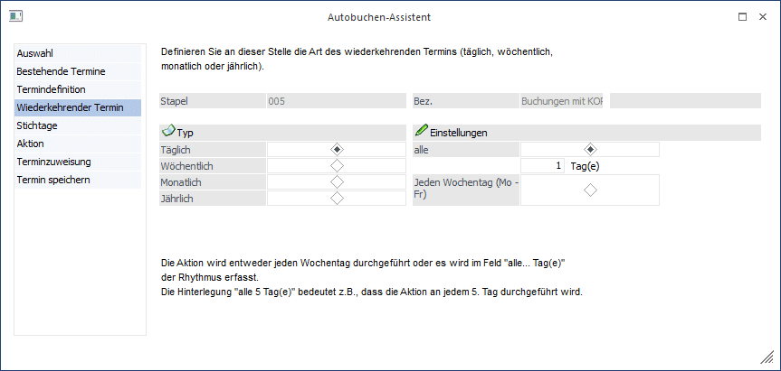
Abhängig von der Eingabe im Bereich "Typ" ändern sich die Eingabefelder im Bereich "Einstellungen".
Ø Täglich
Die Aktion wird entweder jeden Wochentag durchgeführt, oder es wird im Feld "alle ... Tag(e)" der Rhythmus erfasst. "Alle 5 Tag(e)" bedeutet z.B., dass die Aktion an jedem 5. Tag durchgeführt wird.
Ø Wöchentlich
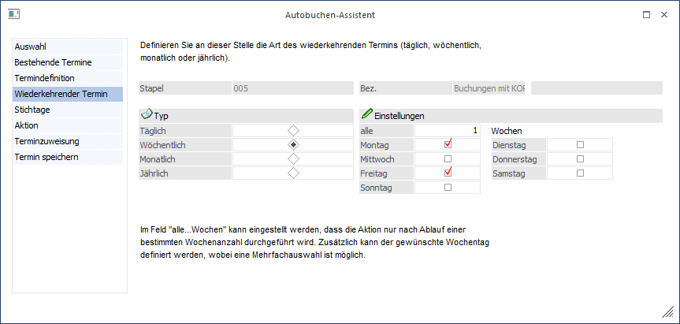
Bei der Einstellung "Wöchentlich" kann gewählt werden, an welchem Wochentag die Aktion durchgeführt werden soll. Eine Mehrfachauswahl ist möglich, es kann also bei der Einstellung "wöchentlich" auch zu mehreren Aktionen pro Woche kommen.
Weiters kann im Feld "alle ... Wochen" eingestellt werden, dass die Aktion nur nach Ablauf einer bestimmten Wochenanzahl durchgeführt wird.
Ø Monatlich
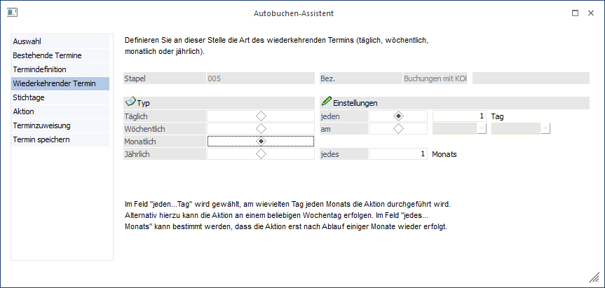
Nach der Einstellung "monatlich" kann im Feld "jeden ... Tag" gewählt werden, am wievielten jeden Monats die Aktion durchgeführt werden soll.
Alternativ kann die Aktion an einem beliebigen Wochentag des Monats erfolgen. Im Feld "jedes ... Monats" kann bestimmt werden, dass die Aktion erst nach Ablauf einiger Monate erfolgt.
Ø Jährlich
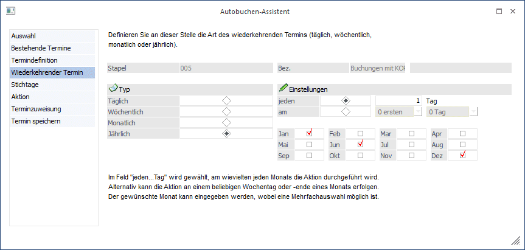
Nach der Anwahl des Typs "jährlich" kann gewählt werden, am wievielten jeden Monats die Aktion durchgeführt werden soll.
Alternativ kann die Aktion an einem beliebigen Wochentag oder -ende eines Monats erfolgen. Der gewünschte Monat kann eingegeben werden, eine Mehrfachauswahl ist möglich.
Nach Drücken des Buttons "Vor" kommen Sie zu Schritt 5 des Assistenten, in dem Stichtage für diese Aktion definiert werden können.
Schritt 5 - Stichtage
Im Schritt 5 des Assistenten können Stichtage definiert werden, d.h. ob zu, nach oder vor einem bestimmten Tag ein definierter Zeitraum addiert / subtrahiert werden soll.
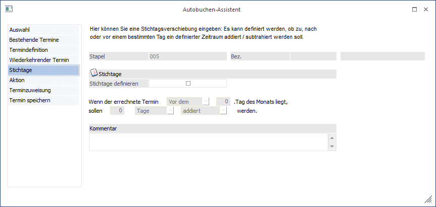
Ø Stichtage
Nach Aktivierung der Checkbox "Stichtage definieren" kann eine Stichtagsverschiebung zu dieser Aktion definiert werden.
Beispiel
Wenn der Termin vor dem 10. eines Monats liegt, dann soll die Aktion 1 Tag später erfolgen.
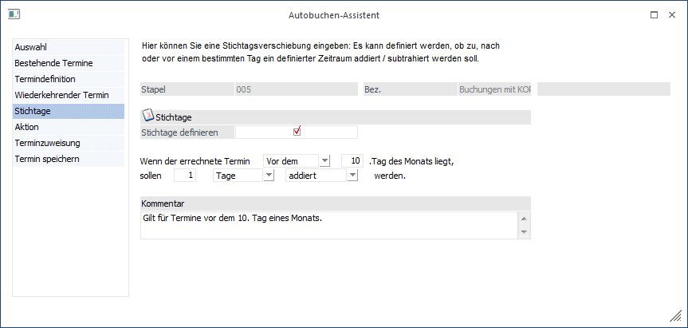
Ø Kommentar
In diesem Feld kann ein Kommentar zu der Aktion erfasst werden.
Nach Drücken des Buttons "Vor" kommen Sie zum letzten Schritt des Assistenten (Schritt 8), in dem dieser Termin gespeichert werden kann.
Schritt 6 - Aktion
Im Schritt 6 des Assistenten wird die Terminart definiert.
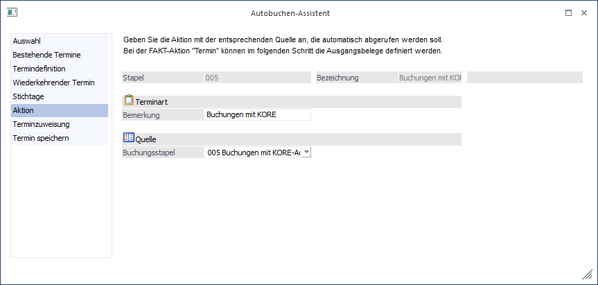
Ø Bemerkung
Es kann eine Bemerkung zu der Aktion angegeben werden.
Ø Quelle
Aus der Auswahllistbox wird jener Stapel ausgewählt werden, der an dem zuvor angegebenen Termin gebucht werden soll.
Nach Drücken des Buttons "Vor" gelangen Sie zum letzten Schritt des Assistenten in dem der Termin gespeichert werden kann.
Schritt 7 - Terminzuweisung
Dieser Schritt ist nur in der Fakturierung, wenn als Terminart "Termin" angegeben wurde, verfügbar.
Schritt 8 - Termin speichern
Im letzten Schritt des Assistenten können die Termine und Aktionen gespeichert und auch gleich ausgeführt werden.
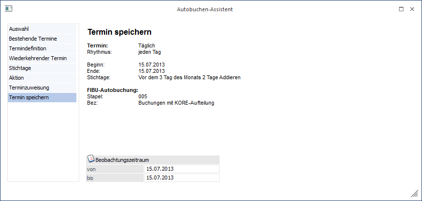
Im oberen Teil dieses Fenster werden Ihnen Ihre Eingaben nochmals zur Kontrolle angezeigt.
Buttons
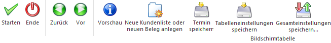
Ø Starten
Durch Drücken des Starten-Buttons werden die Autobuchungen gestartet. Es werden alle zum eingegebenen Beobachtungszeitraum offenen Aktionen in der Vorschau angezeigt. Es wird aber nur der im Assistenten geladene Termin automatisch zur Ausführung selektiert.
Ø Ende
Beendet den Assistenten.
Ø Zurück / Vor
Mittels beiden Button können Sie durch die einzelnen Bereiche des Assistenten navigieren.
Ø Vorschau
Durch Drücken dieses Buttons werden alle gespeicherten Termine in einer Liste ausgegeben.
Ø Neue Kundenliste oder neuen Beleg anlegen
Beim Drücken dieses Buttons wird Buchen-Dialog-Stapel geöffnet, in dem ein neuer Stapel definiert werden kann.
Ø Termin speichern
Nach Drücken dieses Buttons wird die Aktion gespeichert und kann später entweder im Autobeleg oder in der Telefonliste gestartet werden.
Ø Tabelleneinstellungen speichern
Die Spalten einer Tabelle können grundsätzlich an beliebige Positionen verschoben, bzw. in der Breite entsprechend angepasst werden. Durch Anwahl des Buttons "Tabelleneinstellungen speichern" werden die Einstellungen benutzerspezifisch gespeichert und bei dem nächsten Aufruf des Programmpunktes wieder vorgeschlagen.
Ø Gesamteinstellungen speichern
Im Gegensatz zu "Tabelleneinstellungen speichern" können mit "Gesamteinstellungen speichern" mehrere Tabellenaufbauten gespeichert und nach Wunsch geladen werden. Zusätzlich werden Sonderfunktionen der Tabelle (z.B. "Spalte gruppieren") ebenfalls bei der Speicherung bedacht.